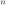
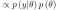
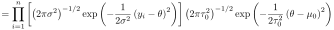

Next: 2.8b. Up: Modelos uniparamétricos Previous: 2.7b.
Distribución normal con media desconocida: Sea una muestra aleatoria
de  estudiantes extraidos de una población lo suficientemente
grande para luego medir su peso. La media del peso viene dada por
. Asuma que pero en la población se distribuye
normal con media desconocida  y desviación estandar de
. Suponga una distribución a priori para normal
con media y desviación estandar de . Encuentre la
distribución a posterior de . Sol: Solo con el objetivo
de ejercitar todos los pasos deduciremos la distribución a posterior
completamente.
y desviación estandar de
. Suponga una distribución a priori para normal
con media y desviación estandar de . Encuentre la
distribución a posterior de . Sol: Solo con el objetivo
de ejercitar todos los pasos deduciremos la distribución a posterior
completamente.
 |
 |
 | |
|  | ||
 |
||
entonces